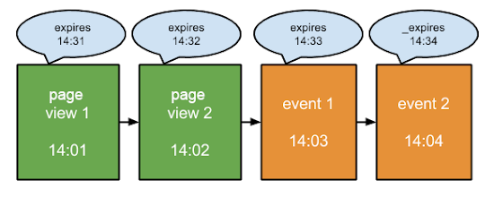
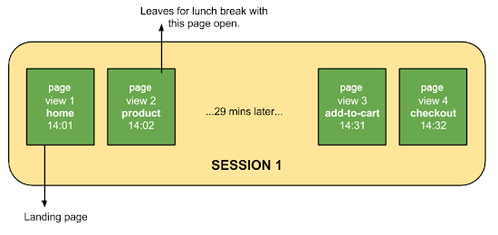
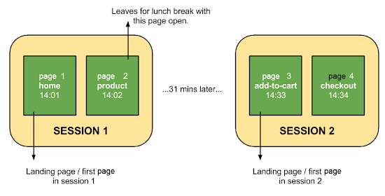
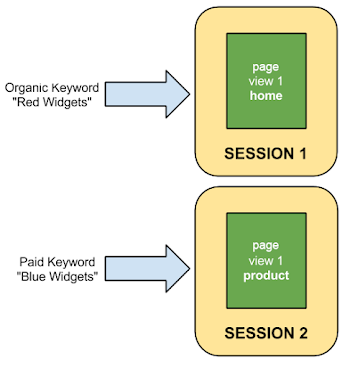
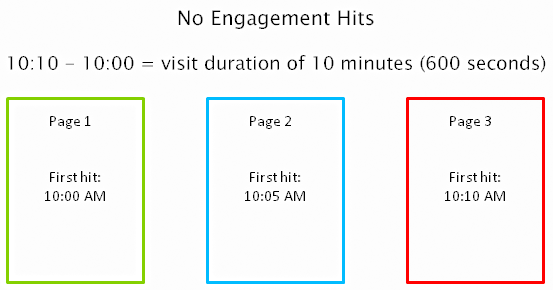
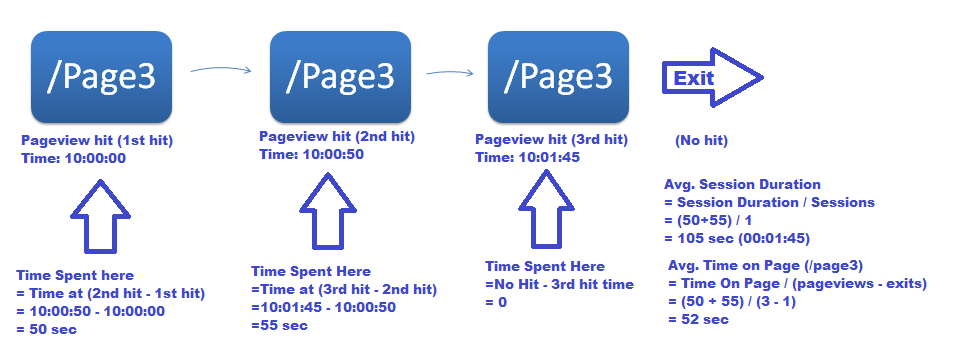
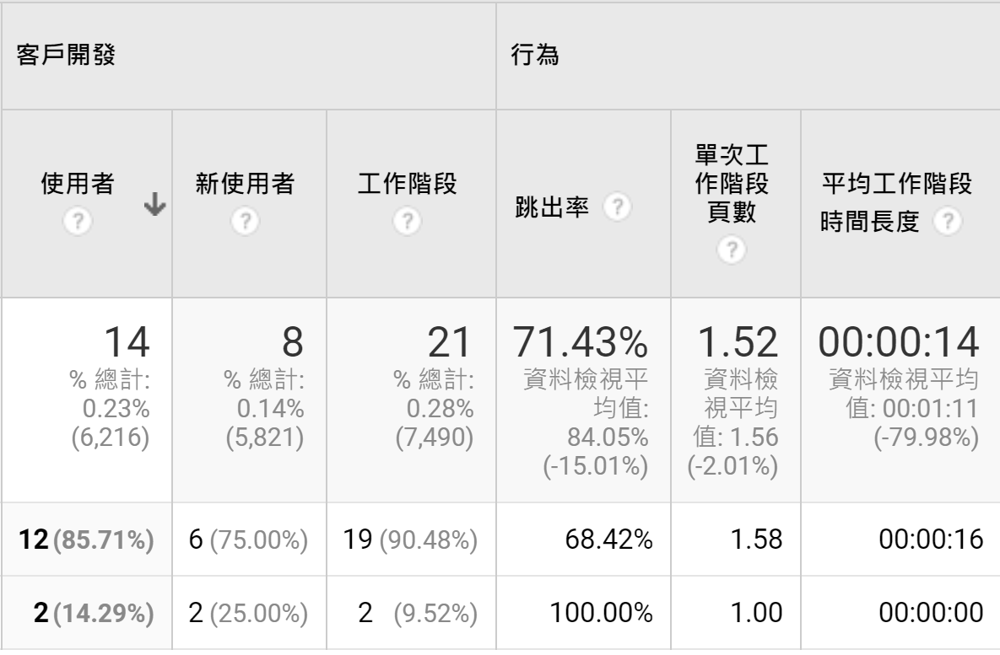

Session 的定義與四種切法
在本單元中，會介紹工作階段（Session）的官方定義、四種會把一個工作階段切斷的情況，以及工作階段時間長度為什麼系統性地被低估。
🎯 學習目標
| # | 你會的能力 | 讓你能解釋的真實問題 |
|---|---|---|
| 1 | 給一串帶時間的瀏覽行為，算出它被切成幾個工作階段 | 我晚上 11:50 開始看、12:10 離開，報表上會出現幾次造訪？ |
| 2 | 說明工作階段時間長度為什麼被低估、被低估多少 | 為什麼跳出的工作階段，平均時間長度顯示 00:00:00，但那個人明明看了兩分鐘？ |
| 3 | 判斷一個「工作階段數成長」的消息是真的成長還是切分造成的 | 某站推播通知發完之後工作階段數漲三成，這是多了人，還是同一批人被切成更多段？ |
🤖 課前 AI 互動（10 分鐘，上課前完成）
請利用 AI 當成你的學習助理，請輸入下列提示
請列出 Google Analytics 裡會讓一個工作階段（session）結束、並開始一個新工作階段的所有情況，每一種都給一個具體的時間範例。列完之後，請告訴我哪一種最常被使用者忽略，以及忽略它會讓報表上的哪個數字失真。
然後追一句：
一個使用者在 8 月 14 日 23:50 進站、8 月 15 日 00:10 離開，中間都在看。報表上會記錄幾個工作階段？請直接給數字和理由。
把它給的數字帶到課堂上，等一下我們會驗證這一題。
換日切分是四種切法裡最容易被漏掉的一種，網路上的教學文也很少寫。如果你的 AI 回答「一個工作階段」，它就漏了；如果它回答「兩個」，你可以再追問它切在哪一秒。這是這門課少數可以當場驗證 AI 對不對的題目。
進行方式 ① 工作階段的官方定義
- 工作階段是一段時間，不是一個動作，它由一連串 hit 組成。
- 預設規則：閒置滿 30 分鐘就結束，之後的行為算新的工作階段。
- 這一段結束你要能看著一條時間軸，指出哪一刻切開。
工作階段是使用者在網站上活躍的一段時間
Google 官方定義：使用者在您網站或應用程式中活躍的時段。根據預設，如果使用者閒置超過 30 分鐘，系統會將他之後的所有動作視為新的工作階段；離開不到 30 分鐘就回來，仍算在原本的工作階段。
關鍵字是「閒置」——計時的起點不是進站那一刻，而是最後一次送出 hit 的那一刻。
每一個 hit 都把到期時間往後推 30 分鐘

14:01 的頁面瀏覽讓工作階段到 14:31 才過期；14:02 再看一頁，就推到 14:32；14:03、14:04 的事件再各推一次。只要有動作，這個工作階段就一直活著。
所以「30 分鐘」不是從進站算，是從你最後一個動作算。一個人在網站上待了三小時，只要每次間隔都不到 30 分鐘，全部算同一個工作階段。
29 分鐘後回來：同一個工作階段

14:02 之後去吃午餐，14:31 回來繼續操作。因為間隔沒有超過 30 分鐘，加入購物車和結帳都還算在原本那一次造訪裡。
31 分鐘後回來：兩個工作階段

完全一樣的四個頁面、幾乎一樣的時間，只因為間隔多了兩分鐘，報表上就變成兩次造訪，而且各自有一個到達網頁。
兩張圖的差別只有兩分鐘，報表上的差別是一倍。這是這門課第一個「同一件事、兩個數字」的例子，也是後面所有指標解讀的原型。
進行方式 ② 另外三種切法
- 除了閒置逾時，還有換日、換流量來源、App 自行呼叫三種切法。
- 換日切分讓工作階段數被高估，而且高估集中在晚上。
- 這一段結束你要能對四種切法各舉一個例子，其中換日與換來源這兩種一定要記得。
換日：跨過午夜就自動切成兩個
一個工作階段不會跨越日界線。使用者 23:50 進站、00:10 離開，第一個工作階段在 23:59:59 結束，第二個在 00:00:00 開始。
結果是工作階段數被高估，而且高估集中在深夜時段。做深夜內容、或者在半夜發推播的媒體，這個誤差會特別明顯。
換流量來源：同一個人立刻被切成新的工作階段

即使兩次進站相隔不到 30 分鐘，只要流量來源換了（自然關鍵字 → 付費關鍵字），就是兩個工作階段。
理由是歸因：工具必須知道這一段行為要記到哪一個來源頭上。一個工作階段只能有一個來源，來源變了就得開新的。
這一條是證照考題最愛出的地方——原始投影片上直接標了「會考」。
App 可以自己決定什麼時候開新的工作階段
行動 App 的 SDK 提供 setNewSession()，開發者可以在送出某個 hit 的時候直接宣告「這是新的一次」。
這代表 App 的工作階段數有一部分是被程式決定的，跨 App 比較工作階段數要先問對方怎麼設。
四種切法一起看
| 切法 | 觸發條件 | 對數字的影響 |
|---|---|---|
| 閒置逾時 | 最後一個 hit 之後 30 分鐘沒有動作 | 中性，這是定義本身 |
| 換日 | 跨過 00:00:00 | 工作階段數被高估，夜間更明顯 |
| 換流量來源 | 來源／媒介／活動參數改變 | 工作階段數被高估，投廣告期間更明顯 |
| App 自行宣告 | 開發者呼叫 SDK | 看設定，跨 App 不可比 |
工作階段不是「一次造訪」，是「工具願意把它算成一段的那一段」。切法變了，數字就變了，人的行為一點都沒變。
進行方式 ③ 時間長度為什麼被低估
- 工具只看得到 hit 的時間戳記，最後一頁的停留時間量不到。
- 只看一頁就離開的工作階段，時間長度直接被記成 0。
- 這一段結束你要能在一張真實報表上指出被低估的那一格。
時間是用 hit 之間的差算出來的
工具沒辦法知道使用者什麼時候關掉分頁。它能做的只有拿兩個 hit 的時間戳記相減。

三頁分別在 10:00、10:05、10:10 產生第一個 hit。工作階段時間長度＝10:10−10:00＝10 分鐘。第三頁看了多久，完全沒有被算進去。
最後一頁的時間永遠是 0

同一頁被載入三次（10:00:00、10:00:50、10:01:45）然後離開。前兩段各算出 50 秒和 55 秒，第三段沒有下一個 hit，算成 0。所以平均網頁停留時間的分母是「瀏覽頁次 − 離開次數」，而不是瀏覽頁次。
這解釋了兩件事：平均網頁停留時間的分母要扣掉離開次數，以及工作階段時間長度一定比真實停留短。
只看一頁就離開，時間長度被記成 0

下面那一列是只有一次瀏覽的流量：跳出率 100%、單次工作階段頁數 1.00、平均工作階段時間長度 00:00:00。那些人不是零秒離開，是工具算不出來。
內容網站的跳出率經常高達 90%，代表你的平均停留時間裡有九成的工作階段是用 0 去平均的。這個數字要當成下限來讀，不是實際值。
進階工具可以補這一刀
比較講究的系統會在頁面裡再埋一個訊號（beacon），使用者捲動或停留到一定時間就送一個 hit 出去，最後一頁才有時間可算。GA4 的「參與工作階段」也是往這個方向走。
知道原理之後，你就知道評估一套分析工具的時候該問什麼：你們的停留時間有沒有補最後一頁？
Session 除以 User、Time 除以 Session 怎麼讀
一個使用者在一段時間內可能有多次工作階段。內容網站的 工作階段／使用者 越大越好，通常代表回頭客多；也可以只算回訪者的比值，看得更準。
時間／工作階段在內容網站通常也是越大越好，但要記得它被低估過一次。
進行方式 ④ 怎麼讓工作階段變多
- 把工作階段做大有兩條路：讓同一個人多來幾次，或讓同一次被切成多段。
- 推播通知是最直接的一種，也是最容易把兩條路混在一起的一種。
- 這一段結束你要能對一個成長消息判斷它走的是哪一條路。
推播通知：把人叫回來，也可能只是切斷
手機通知會把使用者叫回 App，這是真的多了一次造訪。但如果通知發在使用者正在使用的時候，它做的是把原本一段連續使用切成兩段。
同樣是工作階段數上升，前者是成長，後者是切分。
產品改善與數位社交資產：讓人自己想回來
讓使用者在你的產品裡累積東西——收藏、追蹤、草稿、好友——他就有理由回來。這是最耐久的一條路，因為它不依賴你每天發通知。
製造焦慮也有效，但那是有代價的
未讀紅點、限時、快過期，這些都會提高回訪。它們在數字上有效，代價寫在使用者身上，而且不會出現在你的報表裡。
這門課的立場是：先讓你看得懂數字怎麼被做出來，做不做由你決定。
判準：工作階段漲了，使用者有沒有跟著漲
跟上一節 PV 的判準是同一句話。工作階段數上升而使用者數沒動，多半是切分，不是成長。
⚠️ 迷思攔截
| 常見迷思 | 為什麼太簡化 | 攔截 |
|---|---|---|
| 「工作階段就是造訪一次」 | 換日和換來源會把一次造訪切成兩個工作階段 | 記成「工具願意算成一段的那一段」 |
| 「30 分鐘從進站開始算」 | 是從最後一個 hit 開始算，每個動作都會往後推 | 看到 30 分鐘就問「從哪一刻起算」 |
| 「跳出的人是秒退」 | 平均時間長度 0 是算不出來，不是真的 0 秒 | 那一格要讀成「無資料」 |
| 「平均停留時間就是使用者實際看的時間」 | 最後一頁量不到，而且跳出全部以 0 計入 | 它是下限，不是實際值 |
| 「換來源會切工作階段？沒聽過」 | 這是為了歸因，一個工作階段只能掛一個來源 | 這條會考，投廣告時影響很大 |
| 「工作階段變多就是有成長」 | 切分也會讓它變多 | 一定要同時看使用者數 |
先修與後續
- 先修：網路數據的三層結構 Hit Session User——工作階段是三層的中間那一層，先有 hit 的概念才看得懂切法。
- 後續：停留、跳出與離開——跳出率與離開率都建立在工作階段的邊界上，這一節先把邊界講清楚。
- 平行相關：流量從哪裡來 Source Medium 與 Channel——換來源會切工作階段，那一節講來源本身怎麼分類。
- 平行相關：GA4 與 AI 問答分析（W3）——GA4 改用「參與工作階段」，屆時回頭對照這一節的四種切法。
💬 討論／分享／反思
判例演練
請兩人一組，判斷下面三個情境各產生幾個工作階段，並說出理由：
- 早上 09:00 看首頁，09:20 看一篇文章，10:10 看第二篇文章
- 23:45 從臉書連結進站，一路看到隔天 00:20
- 從 Google 搜尋進站看了一頁，五分鐘後點到你們的臉書廣告再進站
答完之後，用上面的判定器對一次答案。
配對分享
請同學兩兩一組，互相解釋這一句：
平均工作階段時間長度是一個下限，不是實際值。
- 說出兩個讓它變短的機制
- 對方要能追問「那要看幾成的資料才不會被誤導」
- 一起想一個可以補回真實時間的做法
寫下反思
請寫下這一句並補完：
如果我看到某個網站的工作階段數大幅成長，我會先去看＿＿＿，再決定要不要相信它成長了。
小作業
找一個你有後台的網站或帳號，把「工作階段／使用者」和「平均工作階段時間長度」兩個數字抄下來，並寫出：
- 這個比值代表你的訪客是回頭客多還是一次客多
- 你的平均時間長度被低估的兩個原因分別是什麼
- 如果要讓工作階段數變多，你會選哪一條路、為什麼不選另一條
學生版｜更新於 2026-09-12 12:38